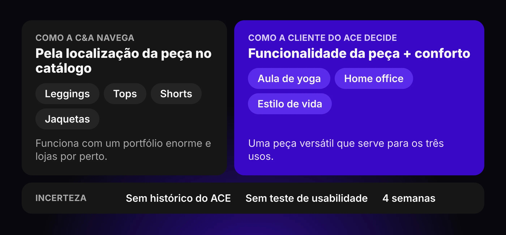
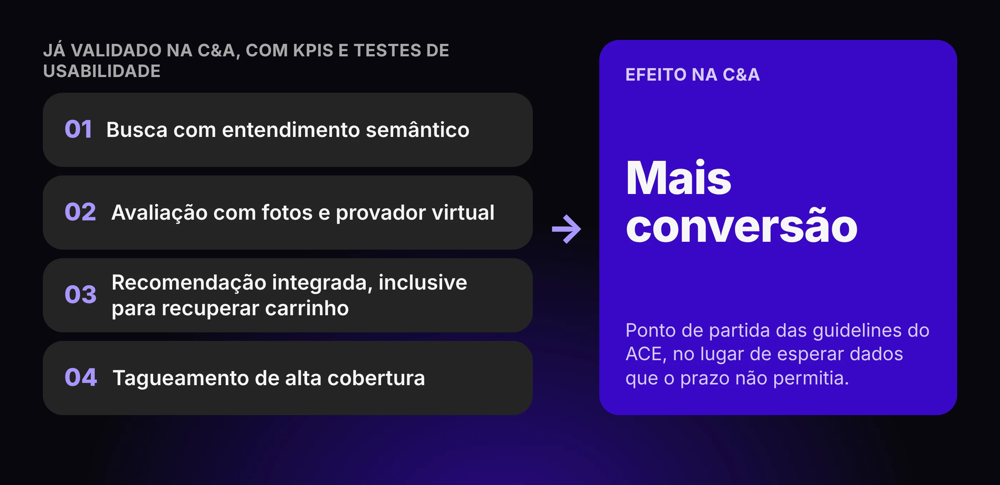
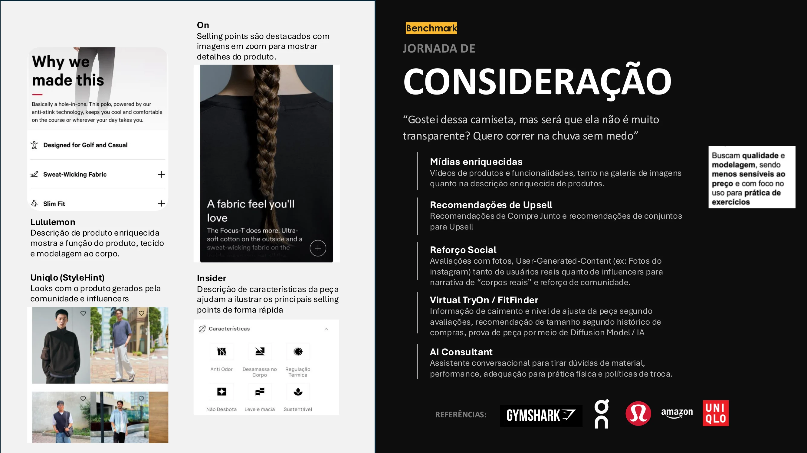
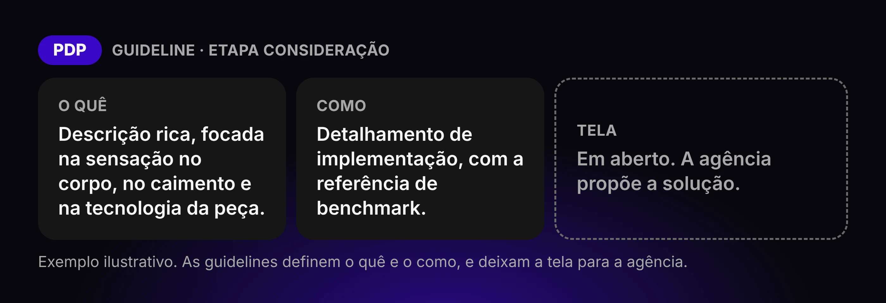
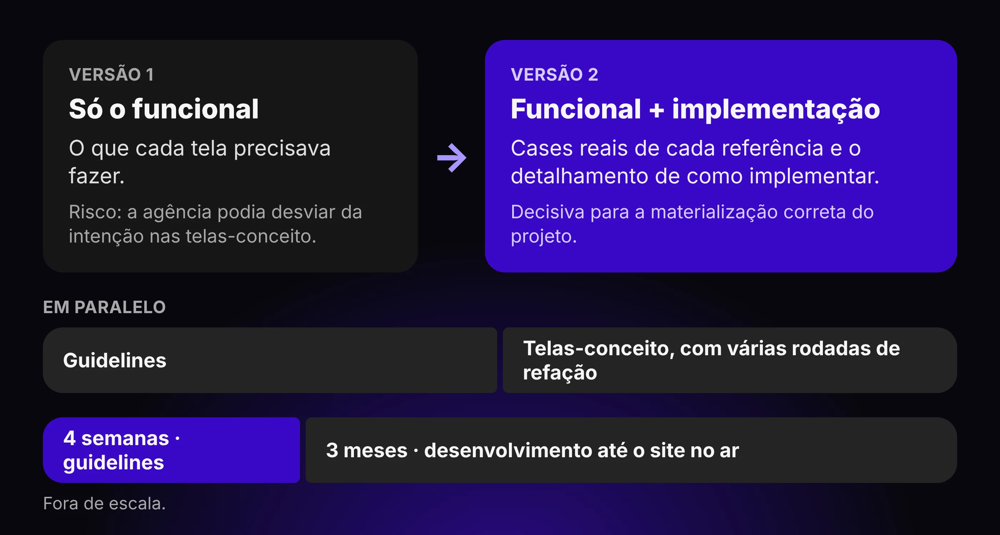

Contexto
ACE é a marca de roupas esportivas da C&A, com share relevante de vendas ao lado de Beleza e Feminino. Como parte da estratégia da companhia de avançar no athleisure — mercado premium com ticket médio maior — a marca foi desvinculada da C&A para operar sozinha, fora do ambiente de varejo, mais próxima de um posicionamento de estilo de vida.
Essa separação forçava uma revisão completa dos canais digitais. A experiência da C&A foi otimizada para um portfólio enorme de itens e apoiada na presença de lojas; o ACE precisaria provar valor em um portfólio bem menor, majoritariamente pela jornada digital, com lojas-conceito que não se integravam diretamente ao ambiente online.
Meu papel
O projeto foi conduzido pelo Gerente de UX, que reportava ao Diretor de Digital e respondia também às diretorias de Marketing — responsável pela estratégia de marca —, Novos Negócios — que operacionalizaria o projeto — e Tecnologia, que acompanhava a implementação e ajudava a escopar o trabalho.
Meu papel foi elaborar o material que serviria de centro de verdade para essas quatro frentes, orquestrando decisões de experiência com base nos pilares de cada uma: estratégia comercial, visão de marca, viabilidade de operação e viabilidade técnica. Ao longo de 4 semanas, cobri três frentes: entender as necessidades da nova célula de negócio ACE, avaliar agências em capacidade operacional, resultados comprovados em varejo de moda e implementação técnica para app e site, e estabelecer a fundação conceitual da experiência digital de athleisure, mapeando de ponta a ponta quais funcionalidades faziam sentido e o que era must-have ou nice-to-have.
O desenho dos conceitos que materializavam essas ideias ficou fora do meu escopo. Meu entregável final foi esse conjunto de guidelines, apresentado e aprovado pelas diretorias envolvidas antes de seguir para a agência vencedora.
- Atração
- Descoberta
- Busca
- Consideração
- Pagamento
- Entrega
- Pós-venda e Recompra
Problema
A experiência de athleisure não se resolve organizando a navegação pela localização das peças no catálogo. Ela depende do acoplamento entre funcionalidade da peça e conforto — a cliente não está procurando uma legging, e sim uma peça versátil que sirva tanto para a aula de yoga quanto para o home office e que comunique um estilo de vida.
Três pilares de experiência sustentaram o restante do trabalho: Social Sports, em que a compra no ACE é uma afirmação sobre estilo de vida e a jornada reflete a cultura acima do produto; Fácil de encontrar, que prioriza sugerir opções relevantes para quem navega em vez de oferecer todas; e Senso de Comunidade, em que a compra é a do movimento e não só de uma peça de roupa.
Sem histórico de jornada do ACE, o desafio não era otimizar uma experiência existente, e sim orquestrar decisão em um ambiente de alta incerteza: nenhuma métrica anterior, nenhum teste de usabilidade da nova marca, quatro semanas de prazo.

Benchmarks
A primeira rodada de benchmarks olhou para o mercado nacional — Track&Field, LIVE! e Alo Yoga — em busca de como marcas de athleisure operam. O achado central foi duplo: descrições de produto ricas, focadas na sensação no corpo, no caimento e em tecnologia, e a marca tratada como estilo de vida, com conteúdo editorial e programas de recompensa integrados à jornada de compra.
A segunda rodada foi internacional, sobre On, Lululemon, Adidas, Nike e Uniqlo, e buscou como cada um materializava essas funcionalidades. Chegamos a dois padrões-ouro distintos: Lululemon na frente em omnichannel, com estoque localizado por loja e retirada integrada (BOPIS); On à frente na experiência digital, com navegação vertical ultra-ágil para filtragem de produtos e páginas de produto ricas em detalhes técnicos e sensoriais.
Nenhum dos dois cobria o problema inteiro sozinho, e essa foi a base das guidelines: cruzar o que cada um fazia de melhor em vez de escolher um único modelo a seguir.
On
Jornada orientada ao produto
Navegação ultrarrápida mesmo em web, com forte foco em features e filtragem por prática esportiva.
Lululemon
Jornada orientada à ocasião
Tecnologia como elemento de conforto e estilo, com Studio Shops e estoque localizado como ponto de contato.
Gymshark
Jornada de comunidade
Construída em volta da comunidade de academias, com UGC e reviews como motores de venda.
Adidas
Jornada omnichannel
Forte programa de comunidade, com retirada e devolução em loja e ampla tecnologia de navegação.
Decisões de design
Parti de sinais já validados na própria C&A, não do zero
Sem dado histórico do ACE, usei o que já sabíamos da plataforma C&A: KPIs e testes de usabilidade anteriores indicavam que busca com entendimento semântico, ferramentas de avaliação com fotos e provadores virtuais, recomendação integrada — inclusive para recuperação de carrinho — e tagueamento de alta cobertura já aumentavam conversão. Descartei esperar por dados específicos do ACE antes de propor uma direção: o prazo de 4 semanas não permitia esse tipo de validação prévia, e a experiência já validada era um ponto de partida mais seguro do que uma página em branco.

Recomendei um modelo operacional digital-first, não omnichannel
A C&A gira estoque pela presença de loja e por preço; o ACE precisaria provar valor com um portfólio muito menor, o que muda o motor da experiência. Propus que a jornada digital fosse o centro da operação, com lojas-conceito funcionando como pontos de marca, sem integração direta com o digital. A alternativa descartada foi replicar o modelo omnichannel da C&A — ele dependeria de uma malha de lojas que o ACE simplesmente não teria.
Estruturei as guidelines por etapa de jornada, não por funcionalidade solta
Cada guideline foi organizada por onde vivia na jornada — PDP, vitrine, busca, home, checkout —, descrevendo a funcionalidade esperada, como cada referência de benchmark implementou aquilo e qual benefício isso trazia. Descartei entregar uma lista solta de funcionalidades desejadas porque ela não dava à agência contexto suficiente sobre prioridade e sobre onde cada decisão afetava a experiência como um todo.

Defini o quê e como, deixando o desenho da solução em aberto
As diretrizes especificavam a funcionalidade esperada e a forma como esperávamos que fosse implementada, mas evitei prescrever a tela final. Isso deixava espaço para a agência propor sua própria solução dentro dos limites que importavam para o negócio. A alternativa descartada era um spec fechado com telas prontas — isso teria antecipado decisões de execução que não eram, nem deveriam ser, minhas nesse momento do projeto.

Resultado
Com base nas guidelines, o time de UX conseguiu produzir uma primeira rodada de layouts-base (KV) para orientar a agência, e o projeto foi aprovado por todas as diretorias envolvidas antes de seguir para desenvolvimento. Não havia métrica de conversão para comparar — o ACE não existia como experiência até então —, então o resultado mensurável é de processo: da leitura de mercado à aprovação unânime em 4 semanas, e do site no ar em 3 meses de desenvolvimento.
- Mercado&ConsumoAce inaugura primeira loja própria em São Paulo
- Bloomberg Línea“Nova avenida de crescimento”, diz CEO da C&A
- ExameC&A abre loja da nova marca para mercado de R$4 bi
Aprendizados
O material inicial das guidelines focava só no aspecto funcional — o que cada tela precisava fazer — sem detalhar como esperávamos que fosse implementado. Isso virou um risco real: sem esse detalhamento, a agência tinha margem para desviar da intenção nas telas-conceito. Corrigimos atualizando o material com cases reais de cada referência e o detalhamento de implementação, e essa atualização foi decisiva para a materialização correta do projeto.
A outra lição veio do paralelismo entre guidelines e telas-conceito: como os dois times trabalharam ao mesmo tempo, várias rodadas de refação foram necessárias até as telas baterem com o que as guidelines pediam. Desenvolvemos um fluxo de comunicação mais intenso para sustentar esse paralelismo, mas o aprendizado real é que as definições-base deveriam ter sido fechadas antes de UI entrar em campo, não em paralelo.
